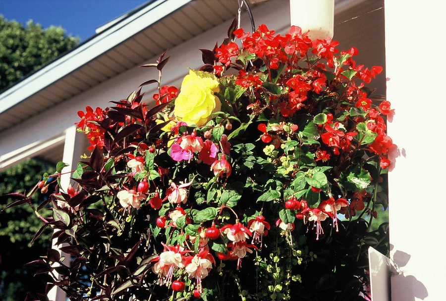
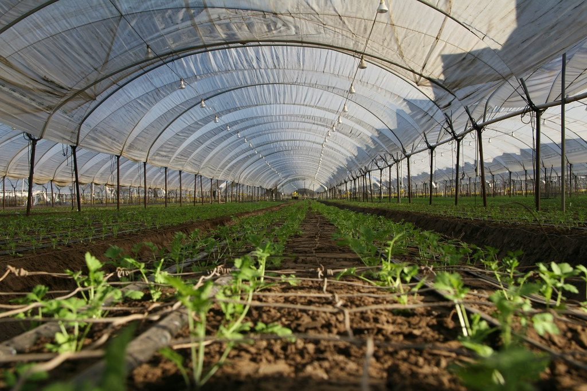
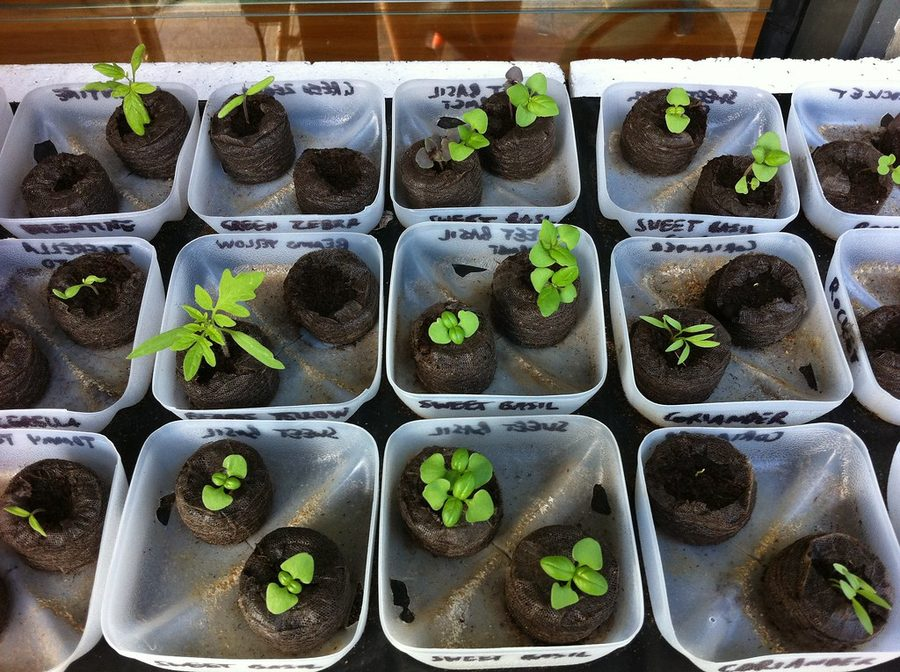

Hanging baskets & containers
Full, colorful baskets and planters for porches, decks and Mother's Day gifts.
Price on request
Annual flowers, hanging baskets, containers, vegetable & herb plants every spring, plus mums and pumpkins in the fall.
Stop by in spring to fill your flower beds, porch and vegetable garden. Ask us what's blooming this week and we'll gladly help you pick plants for sun or shade.

Full, colorful baskets and planters for porches, decks and Mother's Day gifts.
Price on request
Garden-ready vegetable and herb starts, plus small berries and fruit trees for your yard.
Price on requestBrighten your doorstep in autumn with garden mums and pumpkins from our self-serve patch.
SeasonalCindy's Greenhouse grows the plants that make gardens around Thorp and Lublin bloom: annuals for flower beds, baskets and containers, and vegetable plants for your own harvest.
Open from late April into June, when gardens get planted. Dates change each year, so call or check our Facebook page for this season's opening day.
Last chance for baskets, containers and vegetable plants before the season closes.
Self-serve garden mums and pumpkins for porches and front steps.
Give us a call or send an email. We're happy to set aside a basket or answer a gardening question.